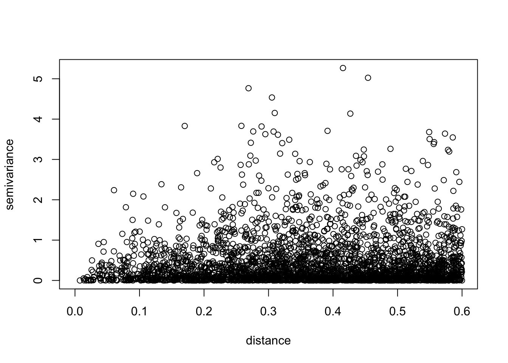
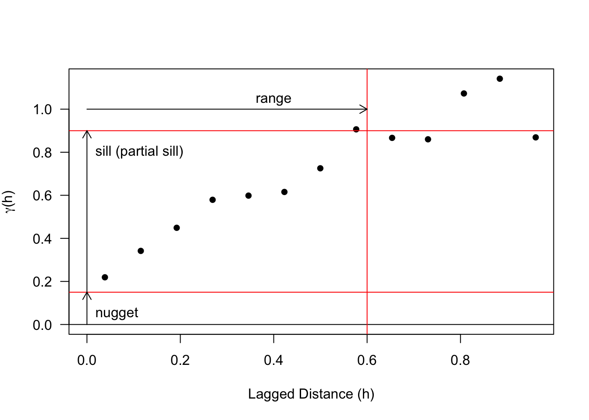
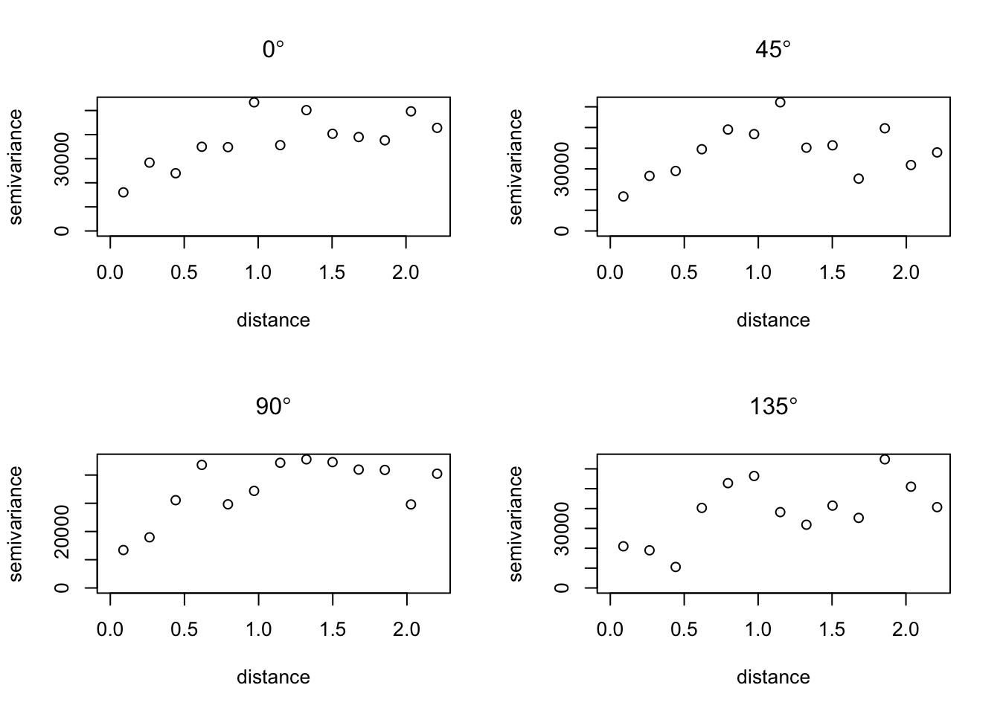

1 Getting Started
“Any fool can write code that a computer can understand. Good programmers write code that humans can understand.” — Martin Fowler
We will use RStudio Cloud (https://rstudio.cloud/) throughout the semester.

RStudio Cloud’s landing page
If you prefer to work with R and RStudio on your own computer (without RStudio Cloud) then
First get R
- Point browser to http://www.r-project.org.
- Select the CRAN (Comprehensive R Archive Network). Scroll to a mirror site.
- Choose the appropriate file for your hardware.
- Follow the instructions to install R.
Then get RStudio
- Click on http://rstudio.org
- Download RStudio Desktop
- Install and open RStudio
1.1 RStudio’s integrated development environment (IDE)
Written in HTML
Top menus
- File > New File > R Markdown
- Tools > Global Options > Appearance
Upper left panel is the markdown file. This is where we add text and code.
- Run code chunks from this panel
- Output from the operations can be placed in this panel or in the Console (see the gear icon above)
- All the text, code, and output can be rendered to an HTML file or a PDF or Word document (see the Knit button above)
Upper right panel shows what is in your current environment and the history of the commands you issued.
- This is also where you can connect to github
Lower left panel is the Console
- I think of this as a sandbox where you try out small bits of code. If it works and is relevant move it to the markdown file.
- This is also where output from running code will be placed.
- Not a place for plain text
Lower right panel shows your project files, the plots that get made, and all the packages associated with the project.
- The File tab shows the files in the project. The most important one is the .Rmd.
- The Plot tab currently shows a blank sheet
- The Packages tab shows all the packages that have been downloaded from CRAN and are associated with this project.
1.2 Create an HTML file
Your assignments and class project will be done in an Rmd file.
- Click on the Assignment project.
- Open the corresponding assignment Rmd file.
- Replace ‘Your Name’ with your name.
- Answer the questions by typing the code between code-chunk delimiters.
- Select the Knit button to generate the HTML.
- If there are errors, fix them and re-knit.
1.3 Basic R
Applied statistics is the analysis and modeling of data. The c() function gets small lists of data items into R. The function combines (concatenates) items. Consider for example a set of hypothetical annual land falling hurricane counts over a ten-year period.
2 3 0 3 1 0 0 1 2 1
We put these count values into our working directory by typing them into the console as follows. The console is the lower left window.
## [1] 2 3 0 3 1 0 0 1 2 1We assign the values to an object called counts. The assignment operator is an equal sign (<- or =). Values do not print. They are assigned to an object name. They are printed by typing the object name as we did on the second line. When printed the values are prefaced with a [1]. This indicates that the object is a vector and the first entry in the vector has a value of 2 (The number immediately to the right of [1]).
Note: We can assign and print by wrapping the entire line of code in parantheses.
## [1] 2 3 0 3 1 0 0 1 2 1Note: we use the arrow keys to retrieve previous commands. Each command is stored in the history file. The up-arrow key moves backwards through the history file. The left and right arrow keys move the cursor along the line.
1.3.1 Functions
We apply functions to data that are stored in objects. For example:
## [1] 13## [1] 10## [1] 1.3## [1] 1.3The function sum() totals the hurricane counts over all years, length() returns the number of elements in the vector. Other functions include, sort(), min(), max(), range(), diff(), and cumsum(). Try these functions on the landfall counts. What does the function range() return? What does the function diff() do?
1.3.2 Data vectors
The hurricane count data stored in the object counts is a vector. This means that R keeps track of the order that the data were entered. There is a first element, a second element, and so on. This is good for several reasons.
The vector of counts has a natural order; year 1, year 2, etc. We don’t want to mix these. We would like to be able to make changes to the data item by item instead of entering the values again. Also, vectors are math objects so that math operations can be performed on them.
For example, suppose counts contain the annual landfall count from the first decade of a longer record. We want to keep track of counts over other decades. This could be done by the following, example.
Most functions operate on each element of the data vector at the same time.
## [1] 2 8 4 5 4 0 3 4 4 2The first year of the first decade is added from the first year of the second decade and so on.
What happens if we apply the c() function to these two vectors? Try it.
## [1] 2 3 0 3 1 0 0 1 2 1 0 5 4 2 3 0 3 3 2 1If we are interested in each year’s count as a difference from the decade mean, we type:
## [1] 0.7 1.7 -1.3 1.7 -0.3 -1.3 -1.3 -0.3 0.7 -0.3In this case a single number (the mean of the first decade) is subtracted from a vector. The result is from subtracting the number from each entry in the data vector. This is an example of data recycling. R repeats values from one vector so that the vector lengths match. Here the mean is repeated 10 times.
1.3.2.1 Variance
Suppose we are interested in the variance of the set of landfall counts. The variance is computed as \[ \hbox{var}(x) = \frac{(x_1 - \bar x)^2 + (x_2 - \bar x)^2 + \cdots + (x_n - \bar x)^2}{n-1} = \frac{1}{n-1}\sum_{i=1}^n (x_i - \bar x)^2 \]
Although the var() function computes this, here we see how to do this using simpler functions. The key is to find the squared differences and then sum.
## [1] 0.7 1.7 -1.3 1.7 -0.3 -1.3 -1.3 -0.3 0.7 -0.3## [1] 0.49 2.89 1.69 2.89 0.09 1.69 1.69 0.09 0.49 0.09## [1] 12.1## [1] 10## [1] 1.344444## [1] 1.3444441.3.3 Vector types
Elements in a vector must all have the same type. This type can be numeric, as in counts, character strings, as in
## [1] "Homer" "Marge" "Bart" "Lisa" "Maggie"Character strings are made with matching quotes, either double, ", or single, '. If we mix types the values will be coerced into a common type, which is usually a character string. Arithmetic operations do not work on character strings.
Returning to the land falling hurricane counts. Now suppose the National Hurricane Center (NHC) reanalyzes a storm, and that the 6th year of the 2nd decade is a 1 rather than a 0 for the number of landfalls. In this case we type:
This assigns to the 6th year of the decade a value of one. The assignment to the 6th entry in the vector d2 is done by referencing the entry with square brackets [].
Keep this straight: Parentheses () are used for functions and square brackets [] are used to extract values from vectors (and arrays, lists, etc).
## [1] 0 5 4 2 3 1 3 3 2 1## [1] 5## [1] 0 5 4 3 1 3 3 2 1## [1] 0 4 3 3 2The first line prints all the values of the vector df2. The second prints only the 2nd value of the vector. The third prints all but the 4th value. The fourth prints the values with odd element numbers.
1.3.4 Structured data
Sometimes we need to create structured data. For example, the integers 1 through 99. To enter these we use the : operator.
The seq() function is more general than :. We specify the sequence interval with the by = or length = arguments.
## [1] 1 3 5 7 9## [1] 1 3 5 7 9## [1] 1 3 5 7 9The rep() function is to create repetitive sequences. The first argument is a value or vector that we want repeated and the second argument is the number of times we want it repeated.
## [1] 1 1 1 1 1 1 1 1 1 1## [1] "Homer" "Marge" "Bart" "Lisa" "Maggie" "Homer" "Marge" "Bart"
## [9] "Lisa" "Maggie"In the second example the vector simpsons containing the Simpson characters is repeated twice.
To repeat each element of the vector use the each = argument.
## [1] "Homer" "Homer" "Marge" "Marge" "Bart" "Bart" "Lisa" "Lisa"
## [9] "Maggie" "Maggie"More complicated patterns can be repeated by specifying pairs of equal-sized vectors. In this case, each element of the first vector is repeated the corresponding number of times specified by the element in the second vector.
## [1] "long" "long" "short" "short" "short"1.3.5 Query data
To find the maximum number of landfalls in the first decade we type.
## [1] 3Which years had the maximum?
## [1] FALSE TRUE FALSE TRUE FALSE FALSE FALSE FALSE FALSE FALSENotice the double equals signs (==). This tests each value in d1 to see if it is equal to 3. The 2nd and 4th values are equal to 3 so TRUEs are returned. Think of this as asking R a question. Is the value equal to 3? R answers all at once with a vector of TRUE’s and FALSE’s.
Now the question is – how do you get the vector element corresponding to the TRUE values? That is, which years have 3 landfalls?
## [1] 2 4The function which.max() can be used to get the first maximum.
## [1] 2We might also want to know the total number of landfalls in each decade and the number of years in a decade without a landfall. Or how about the ratio of the mean number of landfalls over the two decades.
## [1] 13## [1] 24## [1] 3## [1] 1## [1] 1.846154So there is 85% more landfalls during the second decade. Is this difference statistically significant?
To remove an object from the environment use the rm() function.
1.4 Need additional help? Try swirl
The package swirl contains functions to help you learn the basics of R. The install.packages() function gets the package from an CRAN mirror site. This needs to be done only once to your local computer. You can update packages using update.packages(). To make the functions work in your current session you must use the library() function. This needs to be done for every session, but only once per session.
Type:
Choose the lesson: R Programming. Work through lessons 1:8
Getting help: https://www.r-project.org/help.html
1.5 Data Frames
“Measuring programming progress by lines of code is like measuring aircraft building progress by weight.” — Bill Gates
A data frame is used for storing data tables. It is a list of vectors of equal length. For example, the following variable df is a data frame containing three vectors n, s, b.
There are many built-in data frames. For example, here is a built-in data frame in R, called mtcars.
## mpg cyl disp hp drat wt qsec vs am gear carb
## Mazda RX4 21.0 6 160.0 110 3.90 2.620 16.46 0 1 4 4
## Mazda RX4 Wag 21.0 6 160.0 110 3.90 2.875 17.02 0 1 4 4
## Datsun 710 22.8 4 108.0 93 3.85 2.320 18.61 1 1 4 1
## Hornet 4 Drive 21.4 6 258.0 110 3.08 3.215 19.44 1 0 3 1
## Hornet Sportabout 18.7 8 360.0 175 3.15 3.440 17.02 0 0 3 2
## Valiant 18.1 6 225.0 105 2.76 3.460 20.22 1 0 3 1
## Duster 360 14.3 8 360.0 245 3.21 3.570 15.84 0 0 3 4
## Merc 240D 24.4 4 146.7 62 3.69 3.190 20.00 1 0 4 2
## Merc 230 22.8 4 140.8 95 3.92 3.150 22.90 1 0 4 2
## Merc 280 19.2 6 167.6 123 3.92 3.440 18.30 1 0 4 4
## Merc 280C 17.8 6 167.6 123 3.92 3.440 18.90 1 0 4 4
## Merc 450SE 16.4 8 275.8 180 3.07 4.070 17.40 0 0 3 3
## Merc 450SL 17.3 8 275.8 180 3.07 3.730 17.60 0 0 3 3
## Merc 450SLC 15.2 8 275.8 180 3.07 3.780 18.00 0 0 3 3
## Cadillac Fleetwood 10.4 8 472.0 205 2.93 5.250 17.98 0 0 3 4
## Lincoln Continental 10.4 8 460.0 215 3.00 5.424 17.82 0 0 3 4
## Chrysler Imperial 14.7 8 440.0 230 3.23 5.345 17.42 0 0 3 4
## Fiat 128 32.4 4 78.7 66 4.08 2.200 19.47 1 1 4 1
## Honda Civic 30.4 4 75.7 52 4.93 1.615 18.52 1 1 4 2
## Toyota Corolla 33.9 4 71.1 65 4.22 1.835 19.90 1 1 4 1
## Toyota Corona 21.5 4 120.1 97 3.70 2.465 20.01 1 0 3 1
## Dodge Challenger 15.5 8 318.0 150 2.76 3.520 16.87 0 0 3 2
## AMC Javelin 15.2 8 304.0 150 3.15 3.435 17.30 0 0 3 2
## Camaro Z28 13.3 8 350.0 245 3.73 3.840 15.41 0 0 3 4
## Pontiac Firebird 19.2 8 400.0 175 3.08 3.845 17.05 0 0 3 2
## Fiat X1-9 27.3 4 79.0 66 4.08 1.935 18.90 1 1 4 1
## Porsche 914-2 26.0 4 120.3 91 4.43 2.140 16.70 0 1 5 2
## Lotus Europa 30.4 4 95.1 113 3.77 1.513 16.90 1 1 5 2
## Ford Pantera L 15.8 8 351.0 264 4.22 3.170 14.50 0 1 5 4
## Ferrari Dino 19.7 6 145.0 175 3.62 2.770 15.50 0 1 5 6
## Maserati Bora 15.0 8 301.0 335 3.54 3.570 14.60 0 1 5 8
## Volvo 142E 21.4 4 121.0 109 4.11 2.780 18.60 1 1 4 2The top line of the table, called the header, contains the column names. Each horizontal line afterward denotes a data row, which begins with the name of the row, and then followed by the actual data. Each data member of a row is called a cell.
To retrieve data in a cell, we would enter its row and column coordinates in the single square bracket [] operator. The two coordinates are separated by a comma. In other words, the coordinates begins with row position, then followed by a comma, and ends with the column position. The order is important.
Here is the cell value from the first row, second column of mtcars.
## [1] 6We can use the row and column names instead of the numeric coordinates.
## [1] 6The number of data rows in the data frame is given by the nrow() function.
## [1] 32The number of columns of a data frame is given by the ncol() function.
## [1] 11Further details of the mtcars data set is available in the R documentation.
Instead of printing out the entire data frame, it is often desirable to preview it with the head() function beforehand.
## mpg cyl disp hp drat wt qsec vs am gear carb
## Mazda RX4 21.0 6 160 110 3.90 2.620 16.46 0 1 4 4
## Mazda RX4 Wag 21.0 6 160 110 3.90 2.875 17.02 0 1 4 4
## Datsun 710 22.8 4 108 93 3.85 2.320 18.61 1 1 4 1
## Hornet 4 Drive 21.4 6 258 110 3.08 3.215 19.44 1 0 3 1
## Hornet Sportabout 18.7 8 360 175 3.15 3.440 17.02 0 0 3 2
## Valiant 18.1 6 225 105 2.76 3.460 20.22 1 0 3 1Or with the str() function.
## 'data.frame': 32 obs. of 11 variables:
## $ mpg : num 21 21 22.8 21.4 18.7 18.1 14.3 24.4 22.8 19.2 ...
## $ cyl : num 6 6 4 6 8 6 8 4 4 6 ...
## $ disp: num 160 160 108 258 360 ...
## $ hp : num 110 110 93 110 175 105 245 62 95 123 ...
## $ drat: num 3.9 3.9 3.85 3.08 3.15 2.76 3.21 3.69 3.92 3.92 ...
## $ wt : num 2.62 2.88 2.32 3.21 3.44 ...
## $ qsec: num 16.5 17 18.6 19.4 17 ...
## $ vs : num 0 0 1 1 0 1 0 1 1 1 ...
## $ am : num 1 1 1 0 0 0 0 0 0 0 ...
## $ gear: num 4 4 4 3 3 3 3 4 4 4 ...
## $ carb: num 4 4 1 1 2 1 4 2 2 4 ...1.5.1 Another example
Consider answers on questions given to all students in an introductory statistics class at Bowling Green State University. Some of the questions were: What is your height? Choose a number between 1 and 10. Give the time you went to bed last night. The data are available as a data frame called studentdata in the package LearnBayes.
First, install the package.
Next, make a copy of the data frame and call it df. Then print the first six rows using the head() function and list only the 10th row.
## Student Height Gender Shoes Number Dvds ToSleep WakeUp Haircut Job Drink
## 1 1 67 female 10 5 10 -2.5 5.5 60 30.0 water
## 2 2 64 female 20 7 5 1.5 8.0 0 20.0 pop
## 3 3 61 female 12 2 6 -1.5 7.5 48 0.0 milk
## 4 4 61 female 3 6 40 2.0 8.5 10 0.0 water
## 5 5 70 male 4 5 6 0.0 9.0 15 17.5 pop
## 6 6 63 female NA 3 5 1.0 8.5 25 0.0 waterRecall data frames are like spreadsheets with rows and columns. The rows are the observations and the columns are the variables. All columns are of the same length like a matrix. We identify particular data elements of the matrix using the bracket notation [row, column] where row is the row number and column is the column number.
For example here we identify all the columns in the 10th row.
## Student Height Gender Shoes Number Dvds ToSleep WakeUp Haircut Job Drink
## 10 10 65 male 10 7 22 2.5 8.5 12 0 milkDrink preference was one of the questions. The responses are available in the column labeled Drink as a vector. We identify this vector using the $ notation, where the name before the dollar sign identifies the data frame and the name after the dollar sign identifies the column name (dataframeName$columnName).
So we list all the drink preferences using
## [1] water pop milk water pop water water pop water milk milk water
## [13] pop milk pop water water pop water water water water water milk
## [25] pop water water pop water water water water pop water water water
## [37] pop milk pop water water water pop milk water water water pop
## [49] pop water milk pop pop water water pop milk pop pop water
## [61] water water water water water milk pop pop pop water water water
## [73] pop water pop pop water pop pop milk water pop water water
## [85] milk pop water water pop water water water milk water pop water
## [97] pop pop pop water water pop water pop milk milk water water
## [109] water water water pop water milk milk milk water milk pop water
## [121] pop pop pop pop water water water water water water milk water
## [133] pop milk water water water water water <NA> pop water water pop
## [145] milk milk water water pop water water water pop water <NA> water
## [157] water water water water milk milk water milk water water milk water
## [169] pop pop pop water pop pop water water milk milk water water
## [181] water pop pop water water pop pop water water milk water water
## [193] milk <NA> water pop milk pop milk water water water water water
## [205] water pop pop water milk water milk water milk water milk water
## [217] milk water pop water water milk water water pop milk milk water
## [229] milk water pop pop pop water water milk pop milk water milk
## [241] water water pop water water water pop pop water water pop water
## [253] water milk water pop water pop milk milk pop pop water water
## [265] water pop pop milk water water water water milk milk water water
## [277] milk milk milk pop water water <NA> water water water pop milk
## [289] water water pop water water milk pop milk milk water water water
## [301] pop water water <NA> water water water water water pop water water
## [313] water water pop water water water milk milk pop water water water
## [325] water water pop pop milk milk water water pop pop pop pop
## [337] water milk water water pop milk pop water water water pop water
## [349] water water water water water <NA> pop pop water milk water water
## [361] milk water water pop water water water water water water pop water
## [373] water milk water water milk milk milk water water water water pop
## [385] water water pop water pop milk pop water water <NA> water water
## [397] water water milk water pop milk water water water water water milk
## [409] pop pop pop water pop milk water water milk milk pop water
## [421] milk water pop milk water water water water pop water pop pop
## [433] pop milk pop water milk pop water pop pop pop water water
## [445] water water water water pop milk water water water pop milk milk
## [457] pop pop water water milk water milk pop water water water water
## [469] pop water milk water water water water water milk milk water water
## [481] pop water water milk water milk water pop pop water water pop
## [493] pop pop milk water water pop water water water water pop water
## [505] pop milk water <NA> milk water pop water water milk water water
## [517] water water water milk water water pop water pop water milk milk
## [529] milk milk pop water pop milk <NA> milk pop water water pop
## [541] milk pop water milk water pop water pop water pop water water
## [553] pop milk water water water water <NA> water water pop pop milk
## [565] water milk pop pop water water water pop pop pop pop water
## [577] water water water water pop pop water pop water water water water
## [589] milk water water water water pop pop water water water water water
## [601] water water pop water water <NA> milk pop water water water pop
## [613] water pop water pop water water pop pop water pop water milk
## [625] water pop pop pop water milk pop water pop water water milk
## [637] water water water water water water water pop pop pop pop water
## [649] pop water milk water water pop pop pop water
## Levels: milk pop waterNote that some students left that response blank. That is coded as <NA>.
The names of the columns is available with the names() function.
## [1] "Student" "Height" "Gender" "Shoes" "Number" "Dvds" "ToSleep"
## [8] "WakeUp" "Haircut" "Job" "Drink"We can table the responses with the table() function.
##
## milk pop water
## 113 178 355##
## milk pop water <NA>
## 113 178 355 11The numbers are the frequency of responses by Drink category.
Use the plot() method to make a plot of this table.

Suppose we are interested in examining how long students slept. This was not asked directly. We compute it from the ToSleep and WakeUp times columns. We assign the result of the difference to a column we call SleepHrs.
## Min. 1st Qu. Median Mean 3rd Qu. Max. NA's
## 2.500 6.500 7.500 7.385 8.500 12.500 4To see the distribution of sleep times, we construct a histogram with the hist() function.

The histogram function divides the number of sleep hours into one-hour bins and counts the number of students whose computed number of sleep hours falls into each bin. For example based on when they said they went to sleep and when the said they woke up, about 100 students slept between five and six hours the night before the survey.
Since the gender of each student is recorded, we can make comparisons between those who identify as male and those who identify as female. For instance, do men sleep more than women? We can answer this question graphically with box plots.

No apparent difference.
Repeat for hair cut prices.

Big difference.
Finally, is the amount of sleep for a student related to bedtime?

The ToSleep variable is centered on midnight so that -2 means they went to sleep at 10p.
We describe the decreasing relationship by drawing a line through the points. The least-squares line is fit using the lm() function and the line is drawn on the existing plot with the abline() function applied to the linear regression object model.

1.5.2 Tornadoes in the United States
We download the data from the Storm Prediction Center (SPC) http://www.spc.noaa.gov/gis/svrgis/zipped/. We give the zipped file a temporary name on our computer (here temporary.zip) using the destfile = argument.
download.file(url = "http://www.spc.noaa.gov/gis/svrgis/zipped/1950-2018-torn-initpoint.zip",
destfile = "temporary.zip")Next we open the zipped file with the unzip() function. This creates a folder in our working directory called 1950-2018-torn-initpoint.
Finally we load the shapefile into R. We use the read_sf() function from the sf package. We specify the data source name dsn =. The name of the file exists outside of R in your project directory so it needs to be inside quotes (either single or double).
## Linking to GEOS 3.7.2, GDAL 2.4.2, PROJ 5.2.0Much more about working with shapefiles and spatial data frames throughout the semester.
We preview the resulting data frame
## Simple feature collection with 6 features and 22 fields
## geometry type: POINT
## dimension: XY
## bbox: xmin: -94.37 ymin: 34.4 xmax: -84.58 ymax: 41.17
## CRS: 4326
## # A tibble: 6 x 23
## om yr mo dy date time tz st stf stn mag inj fat
## <dbl> <dbl> <dbl> <dbl> <chr> <chr> <dbl> <chr> <dbl> <dbl> <dbl> <dbl> <dbl>
## 1 1 1950 1 3 1950-… 11:0… 3 MO 29 1 3 3 0
## 2 2 1950 1 3 1950-… 11:5… 3 IL 17 2 3 3 0
## 3 3 1950 1 3 1950-… 16:0… 3 OH 39 1 1 1 0
## 4 4 1950 1 13 1950-… 05:2… 3 AR 5 1 3 1 1
## 5 5 1950 1 25 1950-… 19:3… 3 MO 29 2 2 5 0
## 6 6 1950 1 25 1950-… 21:0… 3 IL 17 3 2 0 0
## # … with 10 more variables: loss <dbl>, closs <dbl>, slat <dbl>, slon <dbl>,
## # elat <dbl>, elon <dbl>, len <dbl>, wid <dbl>, fc <dbl>, geometry <POINT
## # [°]>Each row is a unique tornado report. Observations for each report include the date and time, the state (st), the maximum EF rating (mag), the number of injuries (inj), the number of fatalities (fat), estimated property losses (loss), estimated crop losses (closs), start and end locations in decimal degrees longitude and latitude, length of the damage path in yards (len), width of the damage path in miles (wid).
There is also a column called geometry indicating the spatial information.
The total number of tornado reports in the database is returned from the nrow() function.
## [1] 63645Create a subset of the data frame keeping only tornadoes in years (yr) since 2001 and with EF ratings (mag) greater than 0. First we create a logical operation
Compute the correlation between EF rating (mag) and path length (len) and path width (wid).
## [1] 0.4847975## [1] 0.4848238Path length is recorded in miles and path width in yards. To convert them to meters and add the converted values as new columns, type
Create side-by-side box plots of path length (in kilometers) by EF rating.

Create a scatter plot with the size of the point proportional to the EF rating.

Create a map of tornado genesis locations. First get a file containing the U.S. state borders. Then plot the geometry column and overlay the tornado location as points.
library(USAboundaries)
sts <- state.name[!state.name %in% c("Alaska", "Hawaii")]
stateBorders <- us_states(states = sts)
plot(stateBorders$geometry,
col = "grey")
plot(Torn.sf$geometry,
pch = ".",
col = "red",
add = TRUE)
1.5.3 Hurricanes in the United States
We load data directly from the web by specifying the URL as a character string using the file = argument.
The object df is a data frame. A data frame is like a spreadsheet. Values are arranged in rows and columns. Rows are the cases (observations) and columns are the variables. The dim() function returns the size of the data frame defined as the number of rows and the number of columns (in that order).
## [1] 166 6There are 166 rows and 6 columns in the data frame object df.
To get a glimpse of the data values we list the first six lines of the data frame using the head() function.
## Year All MUS G FL E
## 1 1851 1 1 0 1 0
## 2 1852 3 1 1 2 0
## 3 1853 0 0 0 0 0
## 4 1854 2 1 1 0 1
## 5 1855 1 1 1 0 0
## 6 1856 2 1 1 1 0The columns include Year, number of hurricanes (All), number of major hurricanes (MUS), number of Gulf coast hurricanes (G), number of Florida hurricanes (FL), and number of East coast hurricanes (E) in that order. The last six lines of your data frame are listed using the tail() function.
## Year All MUS G FL E
## 161 2011 1 0 0 0 1
## 162 2012 2 0 0 0 1
## 163 2013 0 0 0 0 0
## 164 2014 1 0 0 0 1
## 165 2015 0 0 0 0 0
## 166 2016 2 0 0 1 1The distribution of Florida hurricane counts by year is obtained using the table() function and specifying the FL column with df$FL.
##
## 0 1 2 3 4
## 93 43 24 5 1There are 93 years without a FL hurricane, 43 years with exactly one hurricane, 24 years with two hurricanes, and so on.
The columns in a data frame are referenced using the df$name syntax, where name refers to the column name.
## [1] 1 2 0 0 0 1 0 0 0 0 0 0 0 0 1 0 0 0 0 1 2 0 2 1 0 1 2 1 0 3 0 2 0 0 0 3 1
## [38] 2 0 0 0 0 1 2 0 3 1 1 1 0 1 0 1 0 0 2 0 0 1 1 1 0 0 0 1 2 1 0 1 0 1 0 0 2
## [75] 1 2 0 2 1 0 0 0 2 2 2 1 0 0 1 0 1 2 0 1 2 1 2 2 1 2 0 0 1 0 0 1 0 0 0 1 0
## [112] 0 0 3 1 2 1 1 0 0 0 1 0 0 1 0 0 0 1 0 0 0 0 0 2 0 1 0 1 0 0 1 0 0 2 0 0 2
## [149] 1 0 0 0 0 4 3 0 0 0 0 0 0 0 0 0 0 1## [1] 110Each column is a vector of length equal to the number of rows in the data frame.
How many hurricanes hit Florida in 1906?
## [1] 2The operator == returns a logical vector of length equal to the number of rows in df with values of TRUE and FALSE. The subset operator [ returns the value of the vector df$FL when the logical vector is true.
What years had the most East coast hurricanes?
## [1] 1893 1954 1955 2004As I mentioned last week, there are many functions for working with data frames using base R. These functions require understanding data frames as ‘list’ objects, which makes them harder to learn and to remember.
From the readr package as part of the tidyverse dialect we can use the read_table() function to create a tabled data frame.
## ── Attaching packages ────────────────────────────────────── tidyverse 1.3.0 ──## ✓ ggplot2 3.3.0 ✓ purrr 0.3.4
## ✓ tibble 3.0.1 ✓ dplyr 0.8.5
## ✓ tidyr 1.0.2 ✓ stringr 1.4.0
## ✓ readr 1.3.1 ✓ forcats 0.5.0## ── Conflicts ───────────────────────────────────────── tidyverse_conflicts() ──
## x dplyr::filter() masks stats::filter()
## x dplyr::lag() masks stats::lag()## Parsed with column specification:
## cols(
## Year = col_double(),
## All = col_double(),
## MUS = col_double(),
## G = col_double(),
## FL = col_double(),
## E = col_double()
## )There are many functions for working with data frames using base R. These functions require understanding data frames as list objects, which makes them harder to learn and to remember. Next time will explore a more formalized grammar for data wrangling.
1.5.4 Your turn: Precipitation in Florida
Source: Monthly climate series. Source:
Get monthly statewide average rainfall (in inches) back to the year 1895. Copy/paste into a text editor (I use the app TextWrangler) then import into R using the read.table() function.
I did this and posted the file on my website. Missing values are coded as -9.900 so I included the argument na.string = "-9.900" in the function call.
df <- read.table("http://myweb.fsu.edu/jelsner/temp/data/FLprecip.txt",
na.string = "-9.900",
header = TRUE)
head(df)## Year Jan Feb Mar Apr May Jun Jul Aug Sep Oct Nov
## 1 1895 3.277 3.241 2.499 4.530 4.252 4.500 7.450 6.103 4.669 3.091 2.649
## 2 1896 3.928 3.020 2.570 0.498 2.700 11.228 8.217 5.892 4.352 2.959 3.516
## 3 1897 1.839 6.000 2.125 4.390 2.279 5.221 7.212 6.831 11.144 4.101 1.749
## 4 1898 0.704 2.009 1.259 1.320 1.509 3.292 8.947 13.090 5.231 5.877 2.190
## 5 1899 4.523 5.921 1.898 3.398 1.110 5.803 9.264 6.712 5.132 5.882 0.751
## 6 1900 3.207 4.369 6.800 4.317 3.891 9.993 7.501 4.492 4.930 5.230 1.221
## Dec
## 1 1.586
## 2 2.071
## 3 2.680
## 4 3.891
## 5 1.939
## 6 4.290- What was the statewide average rainfall during the 10th month of the 65th year?
- What was the statewide average rainfall during June of 1900?
- What year had the wettest March?
- What month during 1965 was the wettest?
1.5.5 More practice: More tornadoes
Use the tornado dataset from the Storm Prediction Center and write code to do or answer the following.
- List the names of the columns in the data frame.
- What is the last year in the data?
- How many tornadoes had at least one fatality?
- Create a table of the number of tornadoes by EF rating.
- Create a table of the number of tornadoes by state.
- Add a new variable to the data frame called
areaas the product of the path length and path width in units of square meters. - Map the locations of all the tornadoes with an EF rating of at least 4.